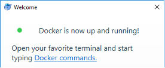
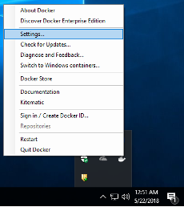

OLIVE Installation for container-based Deliveries
These instructions cover the traditional Docker container based OLIVE delivery where the container only includes the OLIVE server alone. For the new, multi-server delivery packaging that includes the Raven Web GUI, please refer to the OLIVE Martini Setup Guide.
Deploying OLIVE in an Existing Multi-Container Application
If deploying the OLIVE Docker image as a single container in a conventional system then skip to the next section. Otherwise, for users deploying OLIVE in an existing multi-container application managed by Docker Compose or Kubernetes, be sure to create OLIVE containers that meet these requirements:
- The
oliveAppDatadirectory, distributed with an OLIVE release, must be mounted as /home/olive/olive inside the docker container. TheoliveAppDatais the directory that contains the 'plugins' folder with one or more OLIVE plugins.- OLIVE will write logs and persistent enrollments to the oliveAppData directory.
- The plugins folder mounted in /home/olive/olive can vary by container if specific tasks need to be supported by a container. For example, an olive data directory can be mounted that contains only one plugin.
- The OLIVE server is executed as 'oliveserver'
- The OLIVE server is accessible via ports 5588 and 5589 (and internally uses port 5590). External clients must have access to these ports on your OLIVE container(s).
- You can change the default ports used by the OLIVE server via the --port argument. For example, this command will start the OLIVE server using client accessible ports 5591 and 5592:
oliveserver --port 5591- Starting the server with different ports is only necessary if the default OLIVE ports are already used by an existing application, or multiple OLIVE containers are addressable at the same hostname.
- The number of concurrent jobs supported by an OLIVE server can be restricted using the -j argument. For example, to limit the server to one job at a time:
oliveserver -j 1
- If audio needs to be submitted to OLIVE as a path instead of sent as buffer then please contact SRI for some advanced configuration options.
Download, Install, and Launch Docker
First you will need to obtain and install Docker - this can be done in a number of ways, the easiest of which is likely through the Docker website. The Community Edition is free (though you now need to create an account with Docker to obtain it), should fulfill most or all OLIVE needs, and is available for several operating systems, including Windows 10. Docker is available here - https://www.docker.com/community-edition and up-to-date installation instructions can be found from Docker.

Once Docker is installed, launch it to proceed. When running Docker for the first time, if you are using a Windows OS, you may be prompted to enable some Windows features that are not enabled by default, but are required by Docker to run; Hyper-V and Containers. Select “Ok” and wait for the computer to restart to enable these features. Docker should automatically start up once the computer has restarted.

Adjust Docker settings (RAM, Cores)
If you are running Docker on Windows or MacOS, there may be some extra required configuration. By default, Docker is assigned one or two CPU cores, and only 2GB of memory. In order to effectively run the OLIVE docker container, you will need to increase the Memory allocated to Docker to at least 8 GB (or 16 GB for some plugins/tasks), depending on which plugins will be run. If you have cores available, you can obtain greater performance by also increasing the CPU allocation. Allocating more cores and more memory will almost always improve OLIVE performance.


These settings are accessed by right clicking the Docker icon in the notification tray on Windows (notification bar if using MacOS), selecting ‘Settings’ and navigating to the ‘Advanced’ tab, then adjusting the CPU and Memory sliders as desired.

Download OLIVE Docker Package
Now that Docker is installed and properly configured, you can download and uncompress the OLIVE Docker package from the SRI-provided share link. The link, delivery method, and exact filenames will vary from delivery to delivery, but once you have downloaded and unpacked the software archive:
olive2.0-docker-19Sep2020.tar.gz
You should find similar content to below unless told otherwise:
- olive5.7.1
- docs/ - Directory containing the OLIVE documentation
- oliveDocker/
- olive-5.7.1-docker.tar – Docker image containing OLIVE
- run.sh - Linux/MacOS version of script that will launch the OLIVE Docker image and oliveserver.
- run.cmd – Windows version of script that will launch the OLIVE Docker image and oliveserver.
- run-shell.sh - Linux/MacOS version of script that will launch the OLIVE Docker image and open a command line prompt within the Docker container, for running command-line experiments and tasks.
- run-shell.cmd – Windows version of script that will launch the OLIVE Docker image and open a command line prompt within the Docker container, for running command-line experiments and tasks.
- OliveGUI/ - The OLIVE Nightingale GUI (not included in all deliveries)
- bin/
- Nightingale
- bin/
- oliveAppData/
- plugins/
- sad-dnn-v7.0.0 – Speech Activity Detection plugin
- Actual plugins included will depend on the customer, mission, and delivery
- plugins/
- --optional-- oliveAppDataMT/
- plugins/
- tmt-statistical-v1.0.0
- plugins/
You may optionally be provided with Machine Translation capabilities, as shown at the end of the list - this plugin has some special runtime constraints, and will be contained in a separate oliveAppData directory as a result.
Load the OLIVE Docker Image
The first setup step is to load the OLIVE Docker image. Loading the image is as simple as opening a command prompt like PowerShell in Windows or Terminal in MacOS, navigating to the directory containing the OLIVE Docker image, and following the examples below.
Loading the docker image (only necessary once).
$ cd C:\Users\<username>\olive2.0\oliveDocker
$ docker load -i olive-5.7.1-docker.tar
$ cd /home/<username>/olive5.7.1/oliveDocker
$ docker load -i olive-5.7.1-docker.tar
This operation can take some time; quite a few minutes, and you may not see feedback right away. Once you are returned to the command prompt, if there are no error messages, loading is complete and you can proceed.
Set up run and run-shell scripts
Note that we include two (optionally three, if translation is provided) 'run' scripts in this release.
run-shell.shwill open a shell within the container, with the OLIVE environment properly set up, allowing a user to run CLI tasks using localenroll and localanalyze. This script is mainly used for troubleshooting and debugging.
The other script(s) will launch an OLIVE server using the olive-5.7.1 container, and vary only slightly.
run.shis a general-purpose script currently configured to launch an OLIVE server that will only restrict the number of jobs/workers based on the number of cores available on the host machine, and will allow parallel processing to scale based on this. This should be used for most purposes.- (optional)
run_mt.shis a specialized script that is meant to be used to launch an OLIVE server that only points to a Machine Translation plugin. It is configured to limit the number of jobs/workers to one and does not allow parallel processing. It is also configured to have this server listen on different ports than a standard OLIVE server would, in case you need both OLIVE servers to run on the same host. Note that this distinction is the reason that the plugins for deliveries that include translation are split between oliveAppData and oliveAppDataMT - you should be able to support running two containers; one for all plugins that support parallel processing and one for MT - without having to shuffle plugin directories around.
The run.cmd/run.sh and run-shell.cmd/run-shell.sh scripts do most of the heavy-lifting for starting the OLIVE docker and associated processes, but before you can run them, you will need to either set an environment variable, or for a more permanent change, open the desired script with a text editor and edit one or two lines to allow them to establish a shared file location that both the host file system (Windows, Linux, or MacOS) and the OLIVE Docker container can access. Both processes are shown below.
Environment Variable
The run and run-shell scripts are shipped configured to pull the location of the plugins from an environment variable, so that the scripts don't need to be edited out of the box. This does require these variables to be set each time you will need to run If you would like to permanently edit the scripts instead, refer to the next section, direct script editing. To set this location, you will need to set the OLIVE_APP_DATA environment variable, that will adjust what the OLIVE_DATA variable inside the script is set to. This variable needs to point to the path on the host machine that contains the 'plugins' directory you wish for it to use - for typical OLIVE deliveries, this will be [REPLACE-WITH-LOCAL-PATH]/olive2.0/oliveAppData/.
An example of this setup step for the non-translation server:
$ export OLIVE_APP_DATA=[REPLACE-WITH-LOCAL-PATH]/olive2.0/oliveAppData/
$ ./run.sh
Docker will get access to directory: /Users/allen/oliveAppData/ as /home/olive/olive and as /olive-data. Plugins should be located at /Users/allen/oliveAppData/plugins
TASK PLUGIN VERSION DOMAINS
------- -------------------------------- --------- -------------------------------------------------------------------------------------------------------------------
ASR asr-dynapy-v2.0.2 2.0.2 ['cmn-tdnnChain-tel-v1', 'eng-tdnnChain-tel-v1', 'fas-tdnn-tel-v1', 'rus-tdnnChain-tel-v1', 'spa-tdnnChain-tel-v1']
LDD ldd-sbcEmbed-v1.0.1 1.0.1 ['multi-v1']
LID lid-embedplda-v2.0.1 2.0.1 ['multi-v1']
... etc.
--------- Server ready Tue Feb 23 04:03:13 2021 ---------
-- Optional step for Machine Translation Only --
This same step described above is necessary for the run-mt.sh script that will launch the job-limited server that is only running Machine Translation. The only difference is that the environment variable is instead $OLIVE_APP_DATA_MT, and the default location for most OLIVE deliveries will likely be [REPLACE-WITH-LOCAL-PATH]/olive5.7.1/oliveAppDataMT/.
$ export OLIVE_APP_DATA_MT=[REPLACE-WITH-LOCAL-PATH]/olive5.7.1/oliveAppDataMT/
$ ./run-mt.sh
Docker will get access to directory: /Users/allen/oliveAppDataMT/ as /home/olive/olive and as /olive-data. Plugins should be located at /Users/allen/oliveAppData/plugins
TASK PLUGIN VERSION DOMAINS
------- -------------------------------- --------- -------------------------------------------------------------------------------------------------------------------
TMT tmt-statistical-v1.0.1 1.0.1 ['spa-eng-generic-v2', 'fre-eng-generic-v1']
--------- Server ready Tue Feb 23 04:03:13 2021 ---------
NOTE that it is still necessary to set the LOCAL_OLIVE_DATA variable within the run-shell script if you wish to have access to shared audio files. On top of setting OLIVE_APP_DATA as above (which will mount plugins inside the container /home/olive/olive/plugins), you will also need to set the LOCAL_OLIVE_DATA variable within the script. LOCAL_OLIVE_DATA must be set to a location that ends with a directory called olive-data, and can contain scripts, text files, audio files, and any other utilities you might wish to use with the shell while inside your container. To set this variable, you will need to edit this line in side run-shell.sh:
LOCAL_OLIVE_DATA=`cd "$THISDIR/../../../../../../olive-data" && pwd`
So that the path matches where your audio and scripts are stored, for example:
LOCAL_OLIVE_DATA=/home/user1/audio/olive-data/
Direct Script Editing
The first of these shared file locations, stored as the variable OLIVE_DATA within the run/run-shell scripts, is where the container will write information such as model enrollments and log files, as well as where the server will find plugins. Plugins must be contained in a directory called plugins, located directly within the directory that LOCAL_OLIVE is assigned to. In the examples below, C:\Users\<username>\olive5.7.1\oliveAppData for the Windows example, and /home/<username>/olive2.0/oliveAppData for the macOS/linux example has a child directory called plugins: C:\Users\<username>\olive5.7.1\oliveAppData\plugins or /home/<username>/olive5.7.1/oliveAppData/plugins respectively.
The second location is saved into the LOCAL_OLIVE_DATA variable, and should be assigned to a folder that contains audio you wish to process with OLIVE, or where you plan on placing this audio. It can be any directory on the host file system (Windows or MacOS) as long as the current user has access to it and the last directory in the path is a directory named ‘olive-data’. The files and folders contained within the directory assigned to LOCAL_OLIVE_DATA will be mounted to /olive-data/ within the OLIVE Docker container, and accessible at that location when operating within the container using the run or run-shell scripts.
# MUST set OLIVE_DATA - For convenience we set it to the value of $OLIVE_APP_DATA, but one could also manually edit if
# you don't normally set OLIVE_APP_DATA. The path at OLIVE_DATA must include your OLIVE 'plugins' folder
: "${OLIVE_APP_DATA:?"ERROR: OLIVE_APP_DATA is not set. Set this to the location of your OLIVE plugins folder"}"
OLIVE_DATA=$OLIVE_APP_DATA
# Optionally set LOCAL_OLIVE_DATA to a path on the host that ends with a directory named 'olive-data'
LOCAL_OLIVE_DATA="/home/<username>/olive-data"
REM You must set LOCAL_OLIVE below to the directory on your local host that contains the OLIVE 'plugins' directory
set OLIVE_DATA=C:\Users\<username>\olive2.0\oliveAppData
set LOCAL_OLIVE_DATA=C:\Users\<username>\olive-data
Note that for macOS and linux hosts, the OLIVE_DATA variable is automatically assigned to the value of the $OLIVE_APP_DATA environment variable, if it is preferable to set this before calling the run scripts, instead of editing the scripts themselves.
Your delivered run.sh and/or run-shell.sh scripts may have had the line that sets OLIVE_DATA modified to match your specific software installation package more closely and make the necessary changes clearer, especially if there are special cases to consider for your delivery, and may look more similar to this:
OLIVE_DATA=[REPLACE-WITH-LOCAL-PATH]/olive5.7.1/oliveAppDataMT/
An example of what this might look like after adapting it to your local environment:
OLIVE_DATA=/home/users/allen/olive5.7.1/oliveAppDataMT/
or
OLIVE_DATA=/Users/allen/olive5.7.1/oliveAppDataMT/
Note that if your run.sh or run-shell.sh scripts look like this, OLIVE_DATA will not be set automatically based on your OLIVE_APP_DATA environment variable, but must be manually changed within the script before running.
Run OLIVE scripts
Now that all of the prep work has been done, you are ready to launch OLIVE and start running jobs.
Windows hosts
Launching the OLIVE server inside the container, or opening a shell with the OLIVE environment within the container.
$ cd C:\Users\<username>\olive5.7.1\oliveDocker
$ .\run.cmd
-or-
$ .\run-shell.cmd
macOS and linux hosts
Launching the OLIVE server inside the container, or opening a shell with the OLIVE environment within the container.
$ cd /home/<username>/olive5.7.1/oliveDocker
$ export OLIVE_APP_DATA=/home/<username>/olive5.7.1/oliveAppData/ (Optional step if you haven't edited the specified line in the `run` scripts to point to your plugins)
$ ./run.sh
-or-
$ ./run-shell.sh
Which script you run will depend on what task you are hoping to complete. The run.cmd or run.sh script will fire up the OLIVE Docker container and immediately load the oliveserver process. This is to be used alongside the OLIVE GUI or another tool that interacts with oliveserver through the OLIVE API.
For command line processing, the run-shell.cmd or run-shell.sh scripts will launch the OLIVE Docker container and open a command line prompt with the OLIVE environment properly set up for running localenroll, localanalyze, and other command-line based tasks.
Unload OLIVE Docker Container Image
To remove/unload a docker image, whether to upgrade OLIVE containers or for any other reason, first, check that the container is actually still loaded.
$ docker images
REPOSITORY TAG IMAGE ID CREATED SIZE
olive-5.7.1-docker latest d00396687de1 5 days ago 3.56GB
And then unload it.
$ docker rmi olive-5.7.1-docker
[Optional] Install, set up, and launch OLIVE GUI
An installation of OpenJDK 11 is required for running the OLIVE GUI. Instructions for obtaining and installing OpenJDK 11 will depend on your host's OS and can be found here
Once you have installed Open JDK 11, you may need to set the JAVA_HOME environment variable, so that the host operating system knows where to find the appropriate JDK. On macOS and linux, this should be done automatically, or can be done as simply as exporting the JAVA_HOME environment variable to the appropriate location for your machine and OS, and/or with the correct settings:
$ export JAVA_HOME=/usr/libexec/java_home -v 11
You should then be free to launch the OLIVE GUI by simply executing the launcher script included in
On Windows this process is slightly more complicated, but can be done by right-clicking This PC and selecting Properties.
Before continuing, please refer to any additional instructions you may have been given when provided with access to the OLIVE software delivery. This process outlined below is currently being revised to be simpler, and may not be necessary for you to perform, especially for macOS or Windows 10 hosts.
From there, select Advanced system settings in the left-side navigation menu.
Navigate to the Advanced tab and select the Environment Variables button on the lower right portion of the dialog.
From the Environment Variables window, select New from the lower System variables section, and create a new variable named JAVA_HOME that points to the full path of the JDK installation path. Typically, this is C:\Program Files\Java\jdk11\bin.
Finally, you are ready to launch the GUI, either by navigating in File Explorer to the location where the package was uncompressed, then OliveGui/olive-ui/bin/, and double-clicking Nightingale.bat. You can create a shortcut to this file that you can then place on your desktop for more convenient access. Alternatively, it can be launched from the Windows PowerShell by navigating to the same location, then invoking Nightingale.bat. When launching this way, it is possible to provide a config file if desired.
$ cd C:\Users\<username>\olive5.7.1\oliveGui
$ .\Nightingale.bat -c nightingale_config.xml
[Optional] If you wish to use the Batch mode of the OLIVE GUI, an additional step is required to allow the Batch GUI to access audio files stored on the host operating system. Once you’ve installed and run the GUI at least once, open and edit the .scenic-properties file that was created in the user’s home folder in the host OS. For example, for a user named ‘olive’, this file will be created at the location C:\Users\olive.scenic-properties. Once you’ve located and opened this file (it is a text file), add the following lines:
use_scenic_data=true
olive_data_directory=C:\\Users\\<username>\\olive-data
Note that it is very important that the directory assigned to olive_data_directory matches the directory assigned to LOCAL_OLIVE_DATA in the step above.
Note also that it is necessary to include double backslashes. If you don’t, the Java properties reader strips them from the variable, and the path will not be valid.